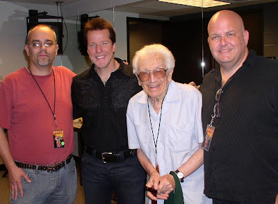

Dunham sighting...
3/6/2009
By Charles Prouty
I just wanted to share with you and your readers about Jeff's show last night. I think it is important to point out that just 18 months ago, Jeff kicked off his Spark of Insanity Tour at the Majestic Theater in San Antonio TX. The show at the Majestic was a sell out, 2000 seats. Last night, Jeff played to an almost sell out crowd of 8800 at the AT&T center, home of the San Antonio Spurs. I was completely amazed at the size of the crowd.
I have had the privilege of attending 5 of Jeff's shows over the past 2 years, Jeff has joked about getting a restraining order against me, and he keeps getting better and better. He truly is at the top of his game. All my friends ask me why I am willing to travel to see the same show? My answer is always, its never the same show. True, he has his format and standard jokes, however that is just a small portion. Jeff never stops making his shows fresh and new.
Even though I know that vent is an illusion, when ever I see Jeff perform, I find myself buying into it. His manipulation skills reflect many years of dedication to his craft, and I am happy for Jeff that it is really paying off for him.
After the show, Jeff's stage manager escorted Peter, Ian, and myself backstage for a few minuets with Jeff. Ian and I were joking about being Jeff groupies. As we were walking down the hall (past a line of people already waiting to see Jeff) Peter managed to crack jokes and make everyone in the hall bust out laughing. Spending time with Peter is a great joy in and of itself, but that's another story. When we arrived, Jeff greeted us with a big smile and hand shake. We chatted for several minuets, I had a chance to ask a few questions I have been saving for him for awhile now. Again, Peter started with his jokes and had all of us doubled over with laughter (we can't take him anywhere, well we do, but he keeps coming back). Jeff told us that his European tour starts next month, and he is really excited about that. One of the questions I asked him, was why he took Melvin out of his act. His reply was that Melvin is very very popular in Europe, and we can expect to see more of him soon.
Sadly, our time with Jeff had to come to and end, we said our good buys and that we will all meet up again soon at the convention.
I encourage everybody to check out Jeff's show. Tell all your friends and family, they will not be disappointed.
I have had the privilege of attending 5 of Jeff's shows over the past 2 years, Jeff has joked about getting a restraining order against me, and he keeps getting better and better. He truly is at the top of his game. All my friends ask me why I am willing to travel to see the same show? My answer is always, its never the same show. True, he has his format and standard jokes, however that is just a small portion. Jeff never stops making his shows fresh and new.
Even though I know that vent is an illusion, when ever I see Jeff perform, I find myself buying into it. His manipulation skills reflect many years of dedication to his craft, and I am happy for Jeff that it is really paying off for him.
After the show, Jeff's stage manager escorted Peter, Ian, and myself backstage for a few minuets with Jeff. Ian and I were joking about being Jeff groupies. As we were walking down the hall (past a line of people already waiting to see Jeff) Peter managed to crack jokes and make everyone in the hall bust out laughing. Spending time with Peter is a great joy in and of itself, but that's another story. When we arrived, Jeff greeted us with a big smile and hand shake. We chatted for several minuets, I had a chance to ask a few questions I have been saving for him for awhile now. Again, Peter started with his jokes and had all of us doubled over with laughter (we can't take him anywhere, well we do, but he keeps coming back). Jeff told us that his European tour starts next month, and he is really excited about that. One of the questions I asked him, was why he took Melvin out of his act. His reply was that Melvin is very very popular in Europe, and we can expect to see more of him soon.
Sadly, our time with Jeff had to come to and end, we said our good buys and that we will all meet up again soon at the convention.
I encourage everybody to check out Jeff's show. Tell all your friends and family, they will not be disappointed.

L-R: Charles Prouty, Dunham, Peter Rich, Ian Varella